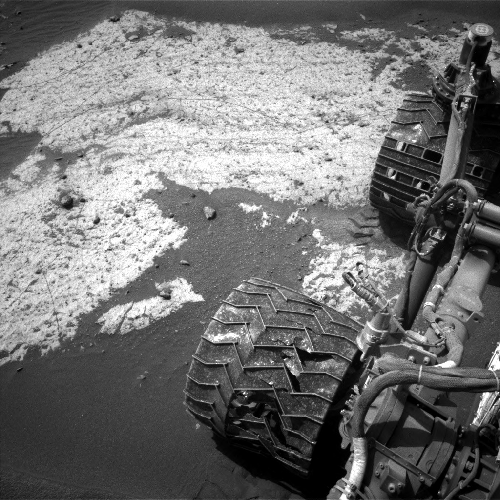

Consola de inteligencia · Senda
Todo lo que la tripulación debe saber hoy
Fuentes abiertas de NASA y NOAA en un solo tablero. Los datos son una instantánea del 14 nov 2026; el reloj y el enlace Tierra–Marte se calculan en vivo.
Bitácora
Imágenes reales de Curiosity · sol 5073
Archivo completo


Así se ve hoy un terreno marciano a la escala de una caminata. Imágenes en bruto de NASA/JPL-Caltech.
Cómo se conecta en vivo
| Dato | Endpoint público | Uso |
|---|---|---|
| Posición y recorrido de Curiosity | mars.nasa.gov/mmgis-maps/MSL/Layers/json/MSL_waypoints.json | Sitio de validación |
| Clima REMS | mars.nasa.gov/rss/api/?feed=weather&category=msl&feedtype=json | Ventana térmica |
| Imágenes del rover | mars.nasa.gov/api/v1/raw_image_items/ | Galería y bitácora |
| Clima espacial | services.swpc.noaa.gov/json/ · kauai.ccmc.gsfc.nasa.gov/DONKI/ | Kp, fulguraciones, partículas |
| Relieve, hielo y minerales | trek.nasa.gov/mars · HiRISE · SHARAD · CRISM · THEMIS | Capas a escala de caminata |